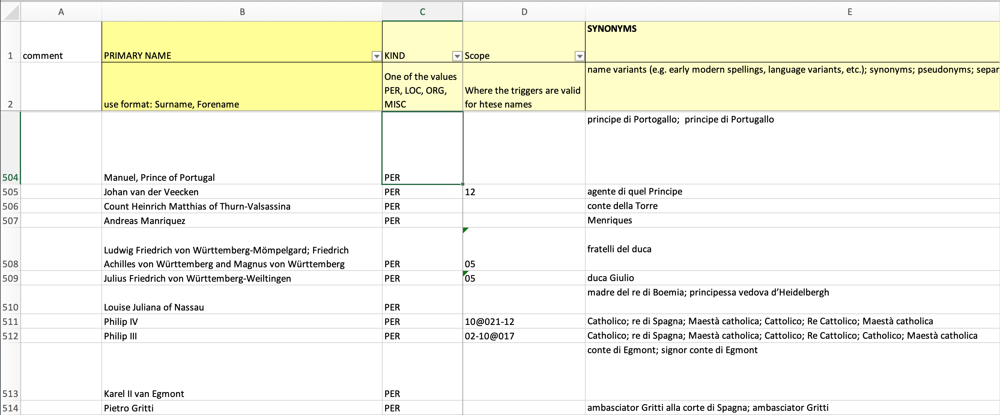
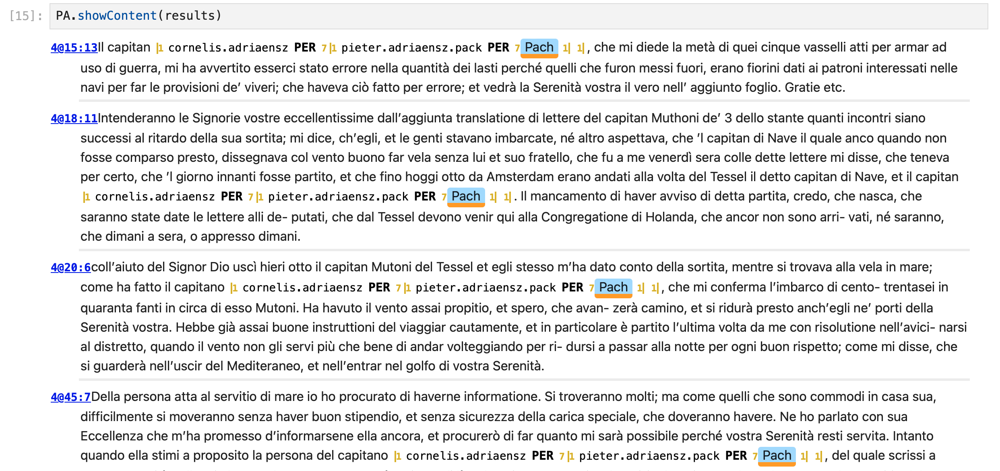

Module tf.browser.ner.ner
API for Named Entity marking.
As a preparation, read tf.about.annotate first, since it explains the concepts, and
guides you to set up the configuration for your corpus.
The main task of this module is to find occurrences of annotations on the basis of criteria.
But this is just the tip of the iceberg, since this module inherits from a number of other modules that inherit form yet other modules:
tf.browser.ner.show: generate HTML for annotated buckets of the corpus;tf.browser.ner.sets: manage annotation sets;tf.browser.ner.data: manage annotation data: loading, adding/deleting annotations;tf.browser.ner.settings: manage the specifics of a TF corpus and have access to its data.
It also uses
tf.browser.ner.match: to filter individual buckets on the basis of criteria.
Hence, Annotation is the central class of this tool, whose methods are relevant
for:
tf.browser.ner.ner: the API for users to manipulate annotations in their own programs, especially in a Jupyter notebook.tf.browser.ner.web: Flask app that routes URLs to controller functions.
web makes use of the following modules that are not needed by ner:
tf.browser.ner.serve: define the controllers of the web app
Again, this is a top of an iceberg, since it inherits from:
tf.browser.ner.request: manage the data of a request;tf.browser.ner.fragments: generate HTML for widgets on the page;
request also uses form to retrieve form values into typed and structured values.
Both web and ner make use of the following modules in as far as they are not
already mentioned under annotate and its parent classes:
tf.browser.ner.helpers: a variety of context-free data jugglers;tf.browser.html: a generic library to generate HTML using Pythonic syntax. This module contains the top-level methods for applying annotation rules to a corpus.
Class hierarchy
The classes Settings, Corpus, Data, Sets, Show, NER
form one hierarchy.
So an object of class NER has access to all methods of these classes.
The classes Serve, Request, Fragments, From form a separate hierarchy.
It will create an NER instance which will be stored in a Serve instance.
Here is an overview how the modules hang together.
A | denotes inheritance, parent classes above child classes.
A <-< arrow denotes dependency by importing code.
Browser | Api-hierarchy
----------------------------------------------------------------
web <-----< Serve <-----------------< NER <-< match
| | | |
Request Fragments <-< html | Sets Sheets Show <-< html
| | |
Form | Data
| |
| Corpus
| |
| Settings
Programmatic annotation done in a Jupyter Notebook
If you have a spreadsheet with named entities, and for each entity a list of surface forms, then this module takes care to read that spreadsheet, translate it to YAML, and then use the YAML as instructions to add entity annotations to the corpus.
See this example notebook.
Here are more details.
Starting up
Load the relevant Python modules:
from tf.app import use
Load your corpus. There are two ways:
-
Work with a local GitHub clone of the corpus in
~/HuygensING/suriano:A = use("HuygensING/suriano:clone", checkout="clone") -
Or let TF auto-download the latest version and work with that:
A = use("HuygensING/suriano")
Load the Ner module:
NE = A.makeNer()
The tool expects some input data to be present: configuration and spreadsheets with
instructions. They can be found in the ner directory.
If you work with a local GitHub clone, that data resides in
~/github/HuygensING/suriano
and if you work with an auto-downloaded copy of the data, it is in
~/text-fabric-data/github/HuygensING/suriano.
The output data of the tool ends up in the _temp directory, which ends up next
to the ner directory.
The entity spreadsheets
Here is an example:

In our example, the name of the spreadsheet containing this information is
people.xlsx and it can be found as ner/sheets/people.xlsx
The spreadsheet will be read as follows:
- the first two rows will be skipped
- after that, each row is taken to describe exactly one entity
- the first column has the full and unique name for that entity
- the second column contains the kind of the entity (you may choose your keywords freely for this)
- the third column contains a number of surface forms for this entity,
separated by
; - when the surface forms are peeled out, leading and trailing white-space will be stripped
- all other columns will be ignored for the moment; in later versions we may use the information in those columns to fill in extra data about the entities; but probably that information will not end up in TF features.
During translation from XLSX to YAML the following happens:
- An identifier is distilled from the name of the entity;
- Missing kind fields are filled with the default kind.
These steps need some configuration information from the ner/config.yaml file.
Translation is done by
NE.setTask(".people")
The resulting YAML ends up next to the spreadsheet, and it looks like this:
christoffel.sticke:
kind: PER
name: Christoffel Sticke
occSpecs: []
diederik.sticke:
kind: PER
name: Diederik Sticke
occSpecs:
- Dierck
- Dirk
dirck.hartog:
kind: PER
name: Dirck Hartog
occSpecs:
- Dirich Hartocson
- Hertocson
jan.baptist.roelants:
kind: PER
name: Jan-Baptist Roelants
occSpecs:
- Roelans
- Rolans
Inventory
A first step is to find out how many occurrences we find in the corpus for these surface forms:
NE.reportHits()
and the output looks like this
...
cornelis.adriaensz PER Pach 7 x Cornelis Adriaensz. Pack
david.marlot PER Morlot 1 x David de Marlot
erick.dimmer PER Dimer 11 x Erick Dimmer
erycius.puteanus PER Potiano 2 x Erycius Puteanus
francesco.giustiniani PER Giustiniano 11 x Francesco Giustiniani
francois.doubleth PER Doublet 2 x François Doubleth
...
Total 150
Entities that are in the spreadsheet, but not in the corpus are skipped.
Inspection
We now revert to lower-level methods from the tf.browser.ner.ner class to
inspect some of the results.
results = NE.filterContent(bFind="pach", bFindC=False, anyEnt=True, showStats=None)
Here we filtered the chunks (paragraphs) to those that contain the string pach,
in a case-insensitive way, and that contain at least one entity.
There 6 of them, and we can show them:
NE.showContent(results)

The resulting entities are in _temp/power/entities.tsv and look like this:
erick.dimmer PER 160196
isabella.clara.eugenia PER 142613
gaspar.iii.coligny PER 7877
isabella.clara.eugenia PER 210499
john.vere PER 94659
antonio.lando PER 267755
isabella.clara.eugenia PER 107069
isabella.clara.eugenia PER 9162
michiel.pagani PER 94366
isabella.clara.eugenia PER 179208
isabella.clara.eugenia PER 258933
hans.meinhard PER 75039
...
Each line corresponds to a marked entity occurrence. Lines consist of tab separated fields:
- entity identifier
- entity kind
- remaining fields: slots, i.e. the textual positions occupied by the occurrence. Some entity occurrences consist of multiple words / tokens, hence have multiple slots.
Expand source code Browse git
"""API for Named Entity marking.
As a preparation, read `tf.about.annotate` first, since it explains the concepts, and
guides you to set up the configuration for your corpus.
The main task of this module is to find occurrences of annotations
on the basis of criteria.
But this is just the tip of the iceberg, since this module inherits
from a number of other modules that inherit form yet other modules:
* `tf.browser.ner.show`: generate HTML for annotated buckets of the corpus;
* `tf.browser.ner.sets`: manage annotation sets;
* `tf.browser.ner.data`: manage annotation data: loading, adding/deleting
annotations;
* `tf.browser.ner.settings`: manage the specifics of a TF corpus and have
access to its data.
It also uses
* `tf.browser.ner.match`: to filter individual buckets on the basis of
criteria.
Hence, `Annotation` is the central class of this tool, whose methods are relevant
for:
* `tf.browser.ner.ner`: the API for users to manipulate annotations in their
own programs, especially in a Jupyter notebook.
* `tf.browser.ner.web`: Flask app that routes URLs to controller functions.
`web` makes use of the following modules that are not needed by `ner`:
* `tf.browser.ner.serve`: define the controllers of the web app
Again, this is a top of an iceberg, since it inherits from:
* `tf.browser.ner.request`: manage the data of a request;
* `tf.browser.ner.fragments`: generate HTML for widgets on the page;
`request` also uses `form` to retrieve form values into typed and structured values.
Both `web` and `ner` make use of the following modules in as far as they are not
already mentioned under `annotate` and its parent classes:
* `tf.browser.ner.helpers`: a variety of context-free data jugglers;
* `tf.browser.html`: a generic library to generate HTML using Pythonic
syntax.
This module contains the top-level methods for applying annotation rules to a corpus.
!!! note "Class hierarchy"
The classes `Settings`, `Corpus`, `Data`, `Sets`, `Show`, `NER`
form one hierarchy.
So an object of class `NER` has access to all methods of these classes.
The classes `Serve`, `Request`, `Fragments`, `From` form a separate hierarchy.
It will create an `NER` instance which will be stored in a `Serve` instance.
Here is an overview how the modules hang together.
A `|` denotes inheritance, parent classes above child classes.
A `<-<` arrow denotes dependency by importing code.
```
Browser | Api-hierarchy
----------------------------------------------------------------
web <-----< Serve <-----------------< NER <-< match
| | | |
Request Fragments <-< html | Sets Sheets Show <-< html
| | |
Form | Data
| |
| Corpus
| |
| Settings
```
# Programmatic annotation done in a Jupyter Notebook
If you have a spreadsheet with named entities, and for each entity a list of surface forms,
then this module takes care to read that spreadsheet, translate it to YAML,
and then use the YAML as instructions to add entity annotations to the corpus.
See this
[example notebook](https://nbviewer.jupyter.org/github/HuygensING/suriano/blob/main/programs/ner.ipynb).
Here are more details.
## Starting up
Load the relevant Python modules:
``` python
from tf.app import use
```
Load your corpus. There are two ways:
* Work with a local GitHub clone of the corpus in `~/HuygensING/suriano`:
A = use("HuygensING/suriano:clone", checkout="clone")
* Or let TF auto-download the latest version and work with that:
A = use("HuygensING/suriano")
Load the `Ner` module:
``` python
NE = A.makeNer()
```
The tool expects some input data to be present: configuration and spreadsheets with
instructions. They can be found in the `ner` directory.
If you work with a local GitHub clone, that data resides in
`~/github/HuygensING/suriano`
and if you work with an auto-downloaded copy of the data, it is in
`~/text-fabric-data/github/HuygensING/suriano`.
The output data of the tool ends up in the `_temp` directory, which ends up next
to the `ner` directory.
## The entity spreadsheets
Here is an example:

In our example, the name of the spreadsheet containing this information is
`people.xlsx` and it can be found as `ner/sheets/people.xlsx`
The spreadsheet will be read as follows:
* the first two rows will be skipped
* after that, each row is taken to describe exactly one entity
* the first column has the full and unique name for that entity
* the second column contains the kind of the entity (you may choose your
keywords freely for this)
* the third column contains a number of surface forms for this entity,
separated by `;`
* when the surface forms are peeled out, leading and trailing white-space will be
stripped
* all other columns will be ignored for the moment; in later versions we may use
the information in those columns to fill in extra data about the entities;
but probably that information will not end up in TF features.
During translation from XLSX to YAML the following happens:
* An identifier is distilled from the name of the entity;
* Missing kind fields are filled with the default kind.
These steps need some configuration information from the `ner/config.yaml` file.
Translation is done by
``` python
NE.setTask(".people")
```
The resulting YAML ends up next to the
spreadsheet, and it looks like this:
``` yaml
christoffel.sticke:
kind: PER
name: Christoffel Sticke
occSpecs: []
diederik.sticke:
kind: PER
name: Diederik Sticke
occSpecs:
- Dierck
- Dirk
dirck.hartog:
kind: PER
name: Dirck Hartog
occSpecs:
- Dirich Hartocson
- Hertocson
jan.baptist.roelants:
kind: PER
name: Jan-Baptist Roelants
occSpecs:
- Roelans
- Rolans
```
## Inventory
A first step is to find out how many occurrences we find in the corpus for these
surface forms:
``` python
NE.reportHits()
```
and the output looks like this
```
...
cornelis.adriaensz PER Pach 7 x Cornelis Adriaensz. Pack
david.marlot PER Morlot 1 x David de Marlot
erick.dimmer PER Dimer 11 x Erick Dimmer
erycius.puteanus PER Potiano 2 x Erycius Puteanus
francesco.giustiniani PER Giustiniano 11 x Francesco Giustiniani
francois.doubleth PER Doublet 2 x François Doubleth
...
Total 150
```
Entities that are in the spreadsheet, but not in the corpus are skipped.
## Inspection
We now revert to lower-level methods from the `tf.browser.ner.ner` class to
inspect some of the results.
``` python
results = NE.filterContent(bFind="pach", bFindC=False, anyEnt=True, showStats=None)
```
Here we filtered the chunks (paragraphs) to those that contain the string `pach`,
in a case-insensitive way, and that contain at least one entity.
There 6 of them, and we can show them:
``` python
NE.showContent(results)
```

The resulting entities are in `_temp/power/entities.tsv` and look like this:
```
erick.dimmer PER 160196
isabella.clara.eugenia PER 142613
gaspar.iii.coligny PER 7877
isabella.clara.eugenia PER 210499
john.vere PER 94659
antonio.lando PER 267755
isabella.clara.eugenia PER 107069
isabella.clara.eugenia PER 9162
michiel.pagani PER 94366
isabella.clara.eugenia PER 179208
isabella.clara.eugenia PER 258933
hans.meinhard PER 75039
...
```
Each line corresponds to a marked entity occurrence.
Lines consist of tab separated fields:
* entity identifier
* entity kind
* remaining fields: slots, i.e. the textual positions occupied by the occurrence.
Some entity occurrences consist of multiple words / tokens, hence have multiple
slots.
"""
from textwrap import dedent
import collections
from itertools import chain
from ...dataset import modify
from ...core.generic import AttrDict
from ...core.helpers import console
from ...core.files import (
fileOpen,
dirRemove,
dirNm,
dirExists,
APP_CONFIG,
)
from ...core.timestamp import SILENT_D, DEEP
from .sheets import Sheets
from .helpers import (
findCompile,
toTokens,
makePartitions,
interference,
locInScopes,
)
from .sets import Sets
from .show import Show
from .match import entityMatch, occMatch
class NER(Sheets, Sets, Show):
def __init__(
self,
app,
normalizeChars=None,
data=None,
browse=False,
caseSensitive=False,
silent=False,
):
"""Entity annotation.
Basic methods to handle the various aspects of entity annotation.
These methods can be used by code that runs in the TF browser
and by code that runs in a Jupyter notebook.
This class handles entity sets, it does not contain code to generate HTML.
But it has a parent class, `Show`, that can generate HTML.
This class works with a fixed annotation set.
But it has a parent class, `Sets` that has method to manipulate such sets
and switch between them.
We consider the corpus as a list of buckets (typically level-3 sectional
units; in TEI-derived corpora called `chunk`, being generalizations of
`p` (paragraph) elements). What type exactly the buckets are is configured
in the `ner/config.yaml` file.
Contains methods to translate spreadsheets to YAML files with markup
instructions; to locate all relevant occurrences; and to mark them up
properly.
It is a high-level class, building on the lower-level tools provided
by the Sheets, Sets and Show classes on which it is based.
Parameters
----------
app: object
The object that corresponds to a loaded TF app for a corpus.
normalizeChars: function, optional None
If passed, it is a text transformation function that will be applied
when reading string data from spreadsheets.
The idea is that if the corpus is normalized for certain characters,
you can normalize the search terms and names in the spreadsheet in the
same way. For example, in the Suriano corpus, all incarnations of an
apaostrophe, such as `’` or `'` or `‘` have been normalized to `’`.
But the spreadsheet might introduce the variants again. By providing a
suitable function you can prevent that.
data: object, optional None
Entity data to start with. If this class is initialized by the browser,
the browser hands over the in-memory data that the tool needs.
That way, it can maintain access to the same data between requests.
If None, no data is handed over, and a fresh data store will be
created by an ancestor class (Data)
browse: boolean, optional False
If True, the object is informed that it is run by the TF
browser. This will influence how results are reported back.
silent: boolean, optional False
Where to keep most operations silent
"""
if data is None:
data = AttrDict()
if data.sets is None:
data.sets = AttrDict()
if data.sheets is None:
data.sheets = AttrDict()
self.silent = silent
self.browse = browse
self.app = app
self.normalizeChars = normalizeChars
self.caseSensitive = caseSensitive
Sets.__init__(self, sets=data.sets)
if not self.properlySetup:
return
Sheets.__init__(self, sheets=data.sheets)
if not self.properlySetup:
return
def setTask(self, task, force=False, caseSensitive=None):
if caseSensitive is None:
caseSensitive = self.caseSensitive
(newSetNameRep, newSetRo, newSetSrc, newSetX) = self.setInfo(task)
self.setSet(task)
self.setSheet(
task[1:] if newSetX else None,
force=force,
caseSensitive=caseSensitive,
)
def getTasks(self):
setNames = self.setNames
tasks = set()
for setName in setNames:
tasks.add(
setName.removesuffix("-no-case").removesuffix("-with-case")
if setName.startswith(".")
else setName
)
return tasks
def getMeta(self):
"""Retrieves the metadata of the current sheet."""
sheetData = self.getSheetData()
return (sheetData.metaFields, sheetData.metaData)
def findTriggers(self, triggers):
if not self.properlySetup:
return []
settings = self.settings
spaceEscaped = settings.spaceEscaped
setData = self.getSetData()
getTokens = self.getTokens
getHeadings = self.getHeadings
buckets = setData.buckets or ()
sheetData = self.getSheetData()
caseSensitive = sheetData.caseSensitive
idMap = {trigger: trigger for trigger in triggers}
tMap = {trigger: "" for trigger in triggers}
tPos = {}
triggerSet = set()
instructions = {(): dict(tPos=tPos, tMap=tMap, idMap=idMap)}
for trigger in triggers:
triggerT = toTokens(
trigger, spaceEscaped=spaceEscaped, caseSensitive=caseSensitive
)
triggerSet.add(triggerT)
for triggerT in triggerSet:
for i, token in enumerate(triggerT):
tPos.setdefault(i, {}).setdefault(token, set()).add(triggerT)
inventory = occMatch(
getTokens,
getHeadings,
buckets,
instructions,
spaceEscaped,
caseSensitive=caseSensitive,
)
return inventory
def findTrigger(self, trigger, show=True):
if not self.properlySetup:
return []
app = self.app
L = app.api.L
settings = self.settings
spaceEscaped = settings.spaceEscaped
setData = self.getSetData()
getTokens = self.getTokens
getHeadings = self.getHeadings
buckets = setData.buckets or ()
sheetData = self.getSheetData()
caseSensitive = sheetData.caseSensitive
triggerT = toTokens(
trigger, spaceEscaped=spaceEscaped, caseSensitive=caseSensitive
)
idMap = {trigger: trigger}
tMap = {trigger: ""}
tPos = {}
for i, token in enumerate(triggerT):
tPos.setdefault(i, {}).setdefault(token, set()).add(triggerT)
instructions = {(): dict(tPos=tPos, tMap=tMap, idMap=idMap)}
inventory = occMatch(
getTokens,
getHeadings,
buckets,
instructions,
spaceEscaped,
caseSensitive=caseSensitive,
)
occs = inventory.get(trigger, {}).get(trigger, {}).get("", [])
if show:
nOccs = len(occs)
plural = "" if nOccs == 1 else "s"
app.dm(f"**{nOccs} occurrence{plural}**\n")
if nOccs:
headings = set()
highlights = set()
for occ in occs:
headings.add(L.u(occ[0], otype="chunk")[0])
for slot in occ:
highlights.add(slot)
for hd in sorted(headings):
app.plain(hd, highlights=highlights)
else:
return occs
def getToTokensFunc(self):
settings = self.settings
spaceEscaped = settings.spaceEscaped
sheetData = self.getSheetData()
caseSensitive = sheetData.caseSensitive
def myToTokens(trigger):
return toTokens(
trigger, spaceEscaped=spaceEscaped, caseSensitive=caseSensitive
)
return myToTokens
def partitionTriggers(self, triggers):
return makePartitions(triggers, self.getToTokensFunc())[1]
def triggerInterference(self, alsoInternal=False, alsoExpected=False):
"""Produce a report of interferences between triggers.
Triggers interfere if they have matches that intersect, i.e. there is a match
m1 of trigger t1 and a match m2 of trigger t2 such that m1 and m2 intersect.
Triggers may interfere *potentially*: if the triggers overlap they can have
intersecting matches. But it does not mean that the corpus contains overlapping
matches, i.e. that the triggers conflict actually.
We report *actually* interfering triggers.
Triggers within one row are associated to the same entity and work in the same
row. It is not bad if they are conflicting with each other. If there
are conflicting matches, the trigger that wins still flags the same entity.
The worst thing is that some of these triggers are superfluous, but there is
no reason to be picky on superfluous triggers.
When one trigger is a proper part of another, this is mostly intentional.
If the longer trigger matches, it wins it from the shorter trigger, unless
the shorter trigger's match starts before the longer trigger's match.
We think the user expects the longer trigger to win, but it may surprise him
if the shorter triggers wins because it starts earlier.
Parameters
----------
alsoInternal: boolean, optional False
Also report interference between triggers on the same row.
alsoExpected: boolean, optional False
Also report expected interferences.
"""
setName = self.setName
annoDir = self.annoDir
setDir = f"{annoDir}/{setName}"
reportFile = f"{setDir}/interference.tsv"
app = self.app
L = app.api.L
T = app.api.T
sheetData = self.getSheetData()
rowMap = sheetData.rowMap
triggerScopes = sheetData.triggerScopes
interferences, parts = interference(
rowMap,
triggerScopes,
self.getToTokensFunc(),
alsoInternal=alsoInternal,
alsoExpected=alsoExpected,
)
messages = []
witnessed = {}
nParts = len(parts)
plural = "" if nParts == 1 else "es"
self.console(
f"Looking up {len(interferences)} potential interferences "
f"in {len(parts)} pass{plural} over the corpus ",
newline=False,
)
for part in parts:
self.console(".", newline=False)
inventory = self.findTriggers(part)
for trigger, data in inventory.items():
occs = data.get(trigger, {}).get("", [])
nOccs = len(occs)
if nOccs:
witnessed[trigger] = occs
self.console("")
msg = (
f"{len(witnessed)} potential conflicting trigger pairs with "
f"{sum(len(x) for x in witnessed.values())} conflicts"
)
console(msg)
messages.append(msg)
conflicts = {}
for (
triggerA,
triggerB,
triggerC,
scopeRepA,
scopeRepB,
commonScopes,
) in interferences:
if triggerC not in witnessed:
continue
rowA = sorted(set(rowMap[triggerA]))
rowB = sorted(set(rowMap[triggerB]))
key = "same row" if rowA == rowB else "different rows"
conflicts.setdefault(key, []).append(
(
rowA,
rowB,
triggerA,
triggerB,
witnessed[triggerC],
scopeRepA,
scopeRepB,
commonScopes,
)
)
for key, confls in conflicts.items():
newConfls = []
for (
rowA,
rowB,
triggerA,
triggerB,
occs,
scopeRepA,
scopeRepB,
commonScopes,
) in confls:
hits = {}
for occ in sorted(occs):
sectionNode = L.u(occ[0], otype="chunk")[0]
heading = tuple(
int(x if type(x) is int else x.lstrip("0") or "0")
for x in T.sectionFromNode(sectionNode, fillup=True)
)
if not locInScopes(heading, commonScopes):
continue
heading = app.sectionStrFromNode(sectionNode)
hits.setdefault(heading, []).append(occ)
if len(hits) == 0:
continue
newConfls.append(
(rowA, rowB, triggerA, triggerB, hits, scopeRepA, scopeRepB)
)
msg = f"{key} ({len(newConfls)} pairs)"
msg = f"----------\n{msg}\n----------"
console(msg)
messages.append(msg)
for (
rowA,
rowB,
triggerA,
triggerB,
hits,
scopeRepA,
scopeRepB,
) in newConfls:
rowRepA = ",".join(str(r) for r in rowA)
rowRepB = ",".join(str(r) for r in rowB)
msg = (
f"{rowRepA:<12} ({scopeRepA:<12}): «{triggerA}»\n"
f"{rowRepB:<12} ({scopeRepB:<12}): «{triggerB}»"
)
console(msg)
messages.append(msg)
console(f"{hits=}")
diags = []
i = 0
for heading, occs in sorted(hits.items()):
nOccs = len(occs)
if i == 0:
diags.append([])
diags[-1].append(f"{heading} x {nOccs}")
i += 1
if i == 5:
i = 0
first = True
for batch in diags:
label = f"{'occurrences':>25}: " if first else (" " * 27)
first = False
msg = f"{label} {', '.join(batch)}"
console(msg)
messages.append(msg)
with fileOpen(reportFile, "w") as fh:
for msg in messages:
fh.write(f"{msg}\n")
console(f"Diagnostic trigger interferences written to {reportFile}")
def diagnoseTriggers(self, triggers, detail=True):
sheetData = self.getSheetData()
triggerScopes = sheetData.triggerScopes
parts = self.partitionTriggers(triggers)
uncovered = 0
nParts = len(parts)
plural = "" if nParts == 1 else "es"
self.console(
f"Looking up {len(triggers)} triggers "
f"in {len(parts)} pass{plural} over the corpus ",
newline=False,
)
items = []
for part in parts:
self.console(".", newline=False)
inventory = self.findTriggers(part)
for trigger, data in inventory.items():
occs = data.get(trigger, {}).get("", [])
items.append((trigger, occs))
for (trigger, occs) in sorted(
items,
key=lambda x: (", ".join(sorted(triggerScopes[x[0]])), x[0].lower()),
):
uncovered += (
0 if self.diagnoseTrigger(trigger, occs, detail=detail) else 1
)
self.console("")
return uncovered
def diagnoseTrigger(self, trigger, occs, detail=True):
app = self.app
L = app.api.L
triggerBySlot = self.triggerBySlot
sheetData = self.getSheetData()
triggerScopes = sheetData.triggerScopes
uncoveredSlots = set()
coveredBy = {}
for slots in occs:
for slot in slots:
cTrigger = triggerBySlot.get(slot, None)
if cTrigger is None:
uncoveredSlots.add(slot)
else:
coveredBy.setdefault(cTrigger, set()).add(slot)
properHits = {}
nUncoveredSlots = len(uncoveredSlots)
ok = nUncoveredSlots == 0
if nUncoveredSlots:
for slot in sorted(uncoveredSlots):
heading = app.sectionStrFromNode(L.u(slot, otype="chunk")[0])
occ = properHits.setdefault(heading, [[]])
if len(occ[-1]) == 0 or occ[-1][-1] + 1 == slot:
occ[-1].append(slot)
else:
occ.append([slot])
nMissedHits = 0
properOccsDiag = []
properOccsDiagCompact = []
for heading, occs in properHits.items():
nOccs = len(occs)
nMissedHits += nOccs
properOccsDiag.append(f"\t\t{heading}: {nOccs} x")
properOccsDiagCompact.append(f"{heading} x {nOccs}")
properOccsDiag[0:0] = [f"\tuncovered: {nMissedHits} x"]
coveredOccsDiag = []
for cTrigger in sorted(coveredBy, key=lambda x: x.lower()):
thisCoveredOccsDiag = []
coveredSlots = sorted(coveredBy[cTrigger])
coveredHits = {}
for slot in sorted(coveredSlots):
heading = app.sectionStrFromNode(L.u(slot, otype="chunk")[0])
occ = coveredHits.setdefault(heading, [[]])
if len(occ[-1]) == 0 or occ[-1][-1] + 1 == slot:
occ[-1].append(slot)
else:
occ.append([slot])
nCoveredHits = 0
for heading, occs in coveredHits.items():
nOccs = len(occs)
nCoveredHits += nOccs
thisCoveredOccsDiag.append(f"\t\t{heading}: {nOccs} x")
thisCoveredOccsDiag[0:0] = [f"\tcovered by: {cTrigger}: {nCoveredHits} x"]
coveredOccsDiag.extend(thisCoveredOccsDiag)
scopeRep = f"({', '.join(sorted(triggerScopes[trigger]))})"
if detail:
console(f"{trigger} {scopeRep}:")
for line in properOccsDiag:
console(line)
for line in coveredOccsDiag:
console(line)
else:
if nUncoveredSlots == 0:
if False:
console(f"{trigger} {scopeRep}: covered by other triggers")
else:
missedHits = []
i = 0
for occRep in properOccsDiagCompact:
if i == 0:
missedHits.append([occRep])
else:
missedHits[-1].append(occRep)
i += 1
if i == 5:
i = 0
missedHitsRep = ', '.join(missedHits[0])
console(f"{trigger:<40} {scopeRep:<12}: {missedHitsRep}", error=True)
for m in missedHits[1:]:
missedHitsRep = ", ".join(m)
console(f"{' ' * 55}{missedHitsRep}", error=True)
return ok
def findOccs(self):
"""Finds the occurrences of multiple triggers.
This is meant to efficiently list all occurrences of many token
sequences in the corpus.
The triggers are in member `instructions`, which must first
be constructed by reading a number of excel files.
It adds the member `inventory` to the object, which is a dict
with subdicts:
`occurrences`: keyed by tuples (eid, kind), the values are
the occurrences of that entity in the corpus.
A single occurrence is represented as a tuple of slots.
`names`: keyed by tuples (eid, kind) and then path,
the value is the name of that entity in the context indicated by path.
"""
if not self.properlySetup:
return []
settings = self.settings
spaceEscaped = settings.spaceEscaped
setData = self.getSetData()
getTokens = self.getTokens
getHeadings = self.getHeadings
buckets = setData.buckets or ()
sheetData = self.getSheetData()
instructions = sheetData.instructions
caseSensitive = sheetData.caseSensitive
sheetData.inventory = occMatch(
getTokens,
getHeadings,
buckets,
instructions,
spaceEscaped,
caseSensitive=caseSensitive,
)
def filterContent(
self,
buckets=None,
node=None,
bFind=None,
bFindC=None,
bFindRe=None,
anyEnt=None,
eVals=None,
trigger=None,
qTokens=None,
valSelect=None,
freeState=None,
showStats=None,
):
"""Filter the buckets according to a variety of criteria.
Either the buckets of the whole corpus are filtered, or a given subset
of buckets, or a subset of buckets, namely those contained in a
particular node, see parameters `node`, and `buckets`.
**Bucket filtering**
The parameters `bFind`, `bFindC`, `bFindRe` specify a regular expression
search on the texts of the buckets.
The positions of the found occurrences is included in the result.
The parameter `anyEnt` is a filter on the presence or absence of entities in
buckets in general.
**Entity filtering**
The parameter `eVals` holds the values of a specific entity to look for.
**Occurrence filtering**
The parameter `qTokens` is a sequence of tokens to look for.
The occurrences that are found, can be filtered further by `valSelect`
and `freeState`.
In entity filtering and occurrence filtering, the matching occurrences
are included in the result.
Parameters
----------
buckets: set of integer, optional None
The set of buckets to filter, instead of the whole corpus.
Works also if the parameter `node` is specified, which also restricts
the buckets to filter. If both are specified, their effect will be
combined.
node: integer, optional None
Gets the context of the node, typically the intermediate-level section
in which the node occurs. Then restricts the filtering to the buckets
contained in the context, instead of the whole corpus.
bFind: string, optional None
A search pattern that filters the buckets, before applying the search
for a token sequence.
bFindC: string, optional None
Whether the search is case sensitive or not.
bFindRe: object, optional None
A compiled regular expression.
This function searches on `bFindRe`, but if it is None, it compiles
`bFind` as regular expression and searches on that. If `bFind` itself
is not None, of course.
anyEnt: boolean, optional None
If True, it wants all buckets that contain at least one already
marked entity; if False, it wants all buckets that do not contain any
already marked entity.
eVals: tuple, optional None
A sequence of values corresponding with the entity features `eid`
and `kind`. If given, the function wants buckets that contain at least
an entity with those properties.
trigger: string, optional None
If given, the function wants buckets that contain at least an
entity that is triggered by this string. The entity in question must
be the one given by the parameter `evals`.
qTokens: tuple, optional None
A sequence of tokens whose occurrences in the corpus will be looked up.
valSelect: dict, optional None
If present, the keys are the entity features (`eid` and `kind`),
and the values are iterables of values that are allowed.
The feature values to filter on.
The results of searching for `eVals` or `qTokens` are filtered further.
If a result is also an instance of an already marked entity,
the properties of that entity will be compared feature by feature with
the allowed values that `valSelect` specifies for that feature.
freeState: boolean, optional None
If True, found occurrences may not intersect with already marked up
features.
If False, found occurrences must intersect with already marked up features.
showStats: boolean, optional None
Whether to show statistics of the find.
If None, it only shows gross totals, if False, it shows nothing,
if True, it shows totals by feature.
Returns
-------
list of tuples
For each bucket that passes the filter, a tuple with the following
members is added to the list:
* the TF node of the bucket;
* tokens: the tokens of the bucket, each token is a tuple consisting
of the TF slot of the token and its string value;
* matches: the match positions of the found occurrences or entity;
* positions: the token positions of where the text of the bucket
starts matching the `bFindRe`;
If `browse` is True, also some stats are passed next to the list
of results.
"""
if not self.properlySetup:
return []
settings = self.settings
bucketType = settings.bucketType
features = settings.features
getTextR = self.getTextR
getTokens = self.getTokens
browse = self.browse
setIsX = self.setIsX
setData = self.getSetData()
entityIndex = setData.entityIndex
entityVal = setData.entityVal
entitySlotVal = setData.entitySlotVal
entitySlotAll = setData.entitySlotAll
entitySlotIndex = setData.entitySlotIndex
if setIsX:
sheetData = self.getSheetData()
triggerFromMatch = sheetData.triggerFromMatch
else:
triggerFromMatch = None
bucketUniverse = (
setData.buckets
if buckets is None
else tuple(sorted(self.checkBuckets(buckets)))
)
buckets = (
bucketUniverse
if node is None
else tuple(sorted(set(bucketUniverse) & set(self.getContext(node))))
)
nFind = 0
nEnt = {feat: collections.Counter() for feat in ("",) + features}
nVisible = {feat: collections.Counter() for feat in ("",) + features}
if bFindRe is None:
if bFind is not None:
(bFind, bFindRe, errorMsg) = findCompile(bFind, bFindC)
if errorMsg:
console(errorMsg, error=True)
hasEnt = eVals is not None
hasQTokens = qTokens is not None and len(qTokens)
hasOcc = not hasEnt and hasQTokens
if hasEnt and eVals in entityVal:
eSlots = entityVal[eVals]
eStarts = {s[0]: s[-1] for s in eSlots}
else:
eStarts = {}
useQTokens = qTokens if hasOcc else None
requireFree = (
True if freeState == "free" else False if freeState == "bound" else None
)
results = []
for b in buckets:
fValStats = {feat: collections.Counter() for feat in features}
(fits, result) = entityMatch(
entityIndex,
eStarts,
entitySlotVal,
entitySlotAll,
entitySlotIndex,
triggerFromMatch,
getTextR,
getTokens,
b,
bFindRe,
anyEnt,
eVals,
trigger,
useQTokens,
valSelect,
requireFree,
fValStats,
)
blocked = fits is not None and not fits
if not blocked:
nFind += 1
for feat in features:
theseStats = fValStats[feat]
if len(theseStats):
theseNEnt = nEnt[feat]
theseNVisible = nVisible[feat]
for ek, n in theseStats.items():
theseNEnt[ek] += n
if not blocked:
theseNVisible[ek] += n
nMatches = len(result[1])
if nMatches:
nEnt[""][None] += nMatches
if not blocked:
nVisible[""][None] += nMatches
if node is None:
if fits is not None and not fits:
continue
if (hasEnt or hasQTokens) and nMatches == 0:
continue
results.append((b, *result))
if browse:
return (results, nFind, nVisible, nEnt)
nResults = len(results)
if showStats:
pluralF = "" if nFind == 1 else "s"
self.console(f"{nFind} {bucketType}{pluralF} satisfy the filter")
for feat in ("",) + (() if anyEnt else features):
if feat == "":
self.console("Combined features match:")
for ek, n in sorted(nEnt[feat].items()):
v = nVisible[feat][ek]
self.console(f"\t{v:>5} of {n:>5} x")
else:
self.console(f"Feature {feat}: found the following values:")
for ek, n in sorted(nEnt[feat].items()):
v = nVisible[feat][ek]
self.console(f"\t{v:>5} of {n:>5} x {ek}")
if showStats or showStats is None:
pluralR = "" if nResults == 1 else "s"
self.console(f"{nResults} {bucketType}{pluralR}")
return results
def reportHits(self, silent=None, showNoHits=False):
"""Reports the inventory."""
if not self.properlySetup:
return
silent = self.silent if silent is None else silent
getHeadings = self.getHeadings
sheetData = self.getSheetData()
allTriggers = sheetData.allTriggers
inventory = sheetData.inventory
setName = self.setName
annoDir = self.annoDir
setDir = f"{annoDir}/{setName}"
reportFile = f"{setDir}/hits.tsv"
reportTriggerBySlotFile = f"{setDir}/triggerBySlot.tsv"
hitData = []
names = set()
noHits = set()
triggersBySlot = {}
for e in sorted(allTriggers):
(name, eidkind, trigger, scope) = e
names.add(name)
entry = (name, trigger, scope)
section = ""
hits = ""
entInfo = inventory.get(eidkind, None)
if entInfo is None:
hitData.append(("!E", *entry, "", 0))
noHits.add(trigger)
continue
triggerInfo = entInfo.get(trigger, None)
if triggerInfo is None:
hitData.append(("!T", *entry, "", 0))
noHits.add(trigger)
continue
occs = triggerInfo.get(scope, None)
if occs is None or len(occs) == 0:
hitData.append(("!P", *entry, "", 0))
noHits.add(trigger)
continue
sectionInfo = collections.Counter()
for slots in occs:
for slot in slots:
triggersBySlot.setdefault(slot, set()).add(trigger)
section = ".".join(str(x) for x in getHeadings(slots[0]))
sectionInfo[section] += 1
for section, hits in sorted(sectionInfo.items()):
hitData.append(("OK", *entry, section, hits))
multipleTriggers = {}
triggerBySlot = {}
self.triggerBySlot = triggerBySlot
for slot, triggers in triggersBySlot.items():
if len(triggers) > 1:
multipleTriggers[slot] = triggers
triggerBySlot[slot] = list(triggers)[0]
if len(multipleTriggers) == 0:
self.console("No slot is covered by more than one trigger")
else:
console(
f"Slots covered by multiple triggers: {len(multipleTriggers)}",
error=True,
)
for slot, triggers in multipleTriggers.items():
triggersRep = ", ".join(f"«{trigger}»" for trigger in sorted(triggers))
self.console(f"{slot:>7}: {triggersRep}", error=True)
trigWithout = len(noHits)
if showNoHits and (trigWithout > 0):
uncovered = 0
console(
"Triggers without hits: " f"{trigWithout}x:",
error=True,
)
if len(noHits):
uncovered = self.diagnoseTriggers(noHits, detail=False)
with fileOpen(reportFile, "w") as rh:
rh.write("label\tname\ttrigger\tsheet\tsection\thits\n")
for h in sorted(hitData):
line = "\t".join(str(c) for c in h)
rh.write(f"{line}\n")
with fileOpen(reportTriggerBySlotFile, "w") as rh:
rh.write("slot\ttrigger\n")
for slot, trigger in sorted(
triggerBySlot.items(), key=lambda x: (x[1], x[0])
):
rh.write(f"{slot}\t{trigger}\n")
nEnt = len(names)
nTriggers = len(allTriggers)
nHits = sum(e[-1] for e in hitData)
msg = (
f"\t{nEnt} entities targeted with {nHits} occurrences. See {reportFile}"
if silent
else dedent(
f"""
Entities targeted: {nEnt:>5}
Triggers searched for: {nTriggers:>5}
Triggers without hits: {trigWithout:>5}
- completely covered: {trigWithout - uncovered:>5}
- missing hits: {uncovered:>5}
Triggers with hits: {nTriggers - trigWithout:>5}
Total hits: {nHits:>5}
All hits in report file: {reportFile}
Triggers by slot in file: {reportTriggerBySlotFile}
"""
)
)
console(msg)
def bakeEntities(self, versionExtension="e"):
"""Consolidates the current entities as nodes into a new TF data source.
This operation is not allowed if the current set is the read-only set with the
empty name, because these entities are already present as nodes in the
TF dataset.
Parameters
----------
versionExtension: string, optional "e"
The new dataset gets a version like the original dataset, but extended
with this string.
"""
if not self.properlySetup:
return
silent = self.silent
setNameRep = self.setNameRep
setIsSrc = self.setIsSrc
if setIsSrc:
console(f"Entity consolidation not meaningful on {setNameRep}", error=True)
return False
version = self.version
settings = self.settings
features = settings.features
featureMeta = settings.featureMeta
setData = self.getSetData()
# Data preparation for the modify function
entityOccs = sorted(set(setData.entities.values()))
self.console(
f"Entity consolidation for {len(entityOccs)} entity occurrences "
f"into version {version}{versionExtension}"
)
slotLink = {}
nodeFeatures = AttrDict({feat: {} for feat in features})
edgeFeatures = AttrDict(eoccs={})
entities = {}
n = 0
for fVals, slots in entityOccs:
n += 1
slotLink[n] = slots
for feat, fVal in zip(features, fVals):
nodeFeatures[feat][n] = fVal
entities.setdefault(fVals, []).append(n)
nEntityOccs = len(entityOccs)
occEdge = edgeFeatures.eoccs
for fVals, occs in entities.items():
n += 1
occEdge[n] = set(occs)
slotLink[n] = tuple(chain.from_iterable(slotLink[m] for m in occs))
for feat, fVal in zip(features, fVals):
nodeFeatures[feat][n] = fVal
nEntities = len(entities)
self.console(f"{nEntityOccs:>6} entity occurrences")
self.console(f"{nEntities:>6} distinct entities")
featureMeta.eoccs = dict(
valueType="str",
description="from entity nodes to their occurrence nodes",
)
addTypes = dict(
ent=dict(
nodeFrom=1,
nodeTo=nEntityOccs,
nodeSlots=slotLink,
nodeFeatures=nodeFeatures,
),
entity=dict(
nodeFrom=nEntityOccs + 1,
nodeTo=nEntityOccs + nEntities,
nodeSlots=slotLink,
nodeFeatures=nodeFeatures,
edgeFeatures=edgeFeatures,
),
)
self.featureMeta = featureMeta
# Call the modify function
app = self.app
context = app.context
appPath = context.appPath
relative = context.relative
dataPath = f"{dirNm(appPath)}/{relative}"
origTf = f"{dataPath}/{app.version}"
newTf = f"{origTf}{versionExtension}"
newVersion = f"{app.version}{versionExtension}"
if dirExists(newTf):
dirRemove(newTf)
app.indent(reset=True)
if not silent:
app.info("Creating a dataset with entity nodes ...")
good = modify(
origTf,
newTf,
targetVersion=newVersion,
addTypes=addTypes,
featureMeta=featureMeta,
silent=DEEP if silent else SILENT_D,
)
if not silent:
app.info("Done")
if not good:
return False
self.console(f"The dataset with entities is now in version {newVersion}")
# tweak the app
config = f"{appPath}/{APP_CONFIG}"
with fileOpen(config) as fh:
text = fh.read()
text = text.replace(f"version: {version}", f'version: "{newVersion}"')
text = text.replace(f'version: "{version}"', f'version: "{newVersion}"')
with fileOpen(config, mode="w") as fh:
fh.write(text)
self.console("The dataset with entities is now the standard version")
return TrueClasses
class NER (app, normalizeChars=None, data=None, browse=False, caseSensitive=False, silent=False)-
Entity annotation.
Basic methods to handle the various aspects of entity annotation. These methods can be used by code that runs in the TF browser and by code that runs in a Jupyter notebook.
This class handles entity sets, it does not contain code to generate HTML. But it has a parent class,
Show, that can generate HTML.This class works with a fixed annotation set. But it has a parent class,
Setsthat has method to manipulate such sets and switch between them.We consider the corpus as a list of buckets (typically level-3 sectional units; in TEI-derived corpora called
chunk, being generalizations ofp(paragraph) elements). What type exactly the buckets are is configured in thener/config.yamlfile.Contains methods to translate spreadsheets to YAML files with markup instructions; to locate all relevant occurrences; and to mark them up properly.
It is a high-level class, building on the lower-level tools provided by the Sheets, Sets and Show classes on which it is based.
Parameters
app:object- The object that corresponds to a loaded TF app for a corpus.
normalizeChars:function, optionalNone- If passed, it is a text transformation function that will be applied
when reading string data from spreadsheets.
The idea is that if the corpus is normalized for certain characters,
you can normalize the search terms and names in the spreadsheet in the
same way. For example, in the Suriano corpus, all incarnations of an
apaostrophe, such as
’or'or‘have been normalized to’. But the spreadsheet might introduce the variants again. By providing a suitable function you can prevent that. data:object, optionalNone- Entity data to start with. If this class is initialized by the browser, the browser hands over the in-memory data that the tool needs. That way, it can maintain access to the same data between requests. If None, no data is handed over, and a fresh data store will be created by an ancestor class (Data)
browse:boolean, optionalFalse- If True, the object is informed that it is run by the TF browser. This will influence how results are reported back.
silent:boolean, optionalFalse- Where to keep most operations silent
Expand source code Browse git
class NER(Sheets, Sets, Show): def __init__( self, app, normalizeChars=None, data=None, browse=False, caseSensitive=False, silent=False, ): """Entity annotation. Basic methods to handle the various aspects of entity annotation. These methods can be used by code that runs in the TF browser and by code that runs in a Jupyter notebook. This class handles entity sets, it does not contain code to generate HTML. But it has a parent class, `Show`, that can generate HTML. This class works with a fixed annotation set. But it has a parent class, `Sets` that has method to manipulate such sets and switch between them. We consider the corpus as a list of buckets (typically level-3 sectional units; in TEI-derived corpora called `chunk`, being generalizations of `p` (paragraph) elements). What type exactly the buckets are is configured in the `ner/config.yaml` file. Contains methods to translate spreadsheets to YAML files with markup instructions; to locate all relevant occurrences; and to mark them up properly. It is a high-level class, building on the lower-level tools provided by the Sheets, Sets and Show classes on which it is based. Parameters ---------- app: object The object that corresponds to a loaded TF app for a corpus. normalizeChars: function, optional None If passed, it is a text transformation function that will be applied when reading string data from spreadsheets. The idea is that if the corpus is normalized for certain characters, you can normalize the search terms and names in the spreadsheet in the same way. For example, in the Suriano corpus, all incarnations of an apaostrophe, such as `’` or `'` or `‘` have been normalized to `’`. But the spreadsheet might introduce the variants again. By providing a suitable function you can prevent that. data: object, optional None Entity data to start with. If this class is initialized by the browser, the browser hands over the in-memory data that the tool needs. That way, it can maintain access to the same data between requests. If None, no data is handed over, and a fresh data store will be created by an ancestor class (Data) browse: boolean, optional False If True, the object is informed that it is run by the TF browser. This will influence how results are reported back. silent: boolean, optional False Where to keep most operations silent """ if data is None: data = AttrDict() if data.sets is None: data.sets = AttrDict() if data.sheets is None: data.sheets = AttrDict() self.silent = silent self.browse = browse self.app = app self.normalizeChars = normalizeChars self.caseSensitive = caseSensitive Sets.__init__(self, sets=data.sets) if not self.properlySetup: return Sheets.__init__(self, sheets=data.sheets) if not self.properlySetup: return def setTask(self, task, force=False, caseSensitive=None): if caseSensitive is None: caseSensitive = self.caseSensitive (newSetNameRep, newSetRo, newSetSrc, newSetX) = self.setInfo(task) self.setSet(task) self.setSheet( task[1:] if newSetX else None, force=force, caseSensitive=caseSensitive, ) def getTasks(self): setNames = self.setNames tasks = set() for setName in setNames: tasks.add( setName.removesuffix("-no-case").removesuffix("-with-case") if setName.startswith(".") else setName ) return tasks def getMeta(self): """Retrieves the metadata of the current sheet.""" sheetData = self.getSheetData() return (sheetData.metaFields, sheetData.metaData) def findTriggers(self, triggers): if not self.properlySetup: return [] settings = self.settings spaceEscaped = settings.spaceEscaped setData = self.getSetData() getTokens = self.getTokens getHeadings = self.getHeadings buckets = setData.buckets or () sheetData = self.getSheetData() caseSensitive = sheetData.caseSensitive idMap = {trigger: trigger for trigger in triggers} tMap = {trigger: "" for trigger in triggers} tPos = {} triggerSet = set() instructions = {(): dict(tPos=tPos, tMap=tMap, idMap=idMap)} for trigger in triggers: triggerT = toTokens( trigger, spaceEscaped=spaceEscaped, caseSensitive=caseSensitive ) triggerSet.add(triggerT) for triggerT in triggerSet: for i, token in enumerate(triggerT): tPos.setdefault(i, {}).setdefault(token, set()).add(triggerT) inventory = occMatch( getTokens, getHeadings, buckets, instructions, spaceEscaped, caseSensitive=caseSensitive, ) return inventory def findTrigger(self, trigger, show=True): if not self.properlySetup: return [] app = self.app L = app.api.L settings = self.settings spaceEscaped = settings.spaceEscaped setData = self.getSetData() getTokens = self.getTokens getHeadings = self.getHeadings buckets = setData.buckets or () sheetData = self.getSheetData() caseSensitive = sheetData.caseSensitive triggerT = toTokens( trigger, spaceEscaped=spaceEscaped, caseSensitive=caseSensitive ) idMap = {trigger: trigger} tMap = {trigger: ""} tPos = {} for i, token in enumerate(triggerT): tPos.setdefault(i, {}).setdefault(token, set()).add(triggerT) instructions = {(): dict(tPos=tPos, tMap=tMap, idMap=idMap)} inventory = occMatch( getTokens, getHeadings, buckets, instructions, spaceEscaped, caseSensitive=caseSensitive, ) occs = inventory.get(trigger, {}).get(trigger, {}).get("", []) if show: nOccs = len(occs) plural = "" if nOccs == 1 else "s" app.dm(f"**{nOccs} occurrence{plural}**\n") if nOccs: headings = set() highlights = set() for occ in occs: headings.add(L.u(occ[0], otype="chunk")[0]) for slot in occ: highlights.add(slot) for hd in sorted(headings): app.plain(hd, highlights=highlights) else: return occs def getToTokensFunc(self): settings = self.settings spaceEscaped = settings.spaceEscaped sheetData = self.getSheetData() caseSensitive = sheetData.caseSensitive def myToTokens(trigger): return toTokens( trigger, spaceEscaped=spaceEscaped, caseSensitive=caseSensitive ) return myToTokens def partitionTriggers(self, triggers): return makePartitions(triggers, self.getToTokensFunc())[1] def triggerInterference(self, alsoInternal=False, alsoExpected=False): """Produce a report of interferences between triggers. Triggers interfere if they have matches that intersect, i.e. there is a match m1 of trigger t1 and a match m2 of trigger t2 such that m1 and m2 intersect. Triggers may interfere *potentially*: if the triggers overlap they can have intersecting matches. But it does not mean that the corpus contains overlapping matches, i.e. that the triggers conflict actually. We report *actually* interfering triggers. Triggers within one row are associated to the same entity and work in the same row. It is not bad if they are conflicting with each other. If there are conflicting matches, the trigger that wins still flags the same entity. The worst thing is that some of these triggers are superfluous, but there is no reason to be picky on superfluous triggers. When one trigger is a proper part of another, this is mostly intentional. If the longer trigger matches, it wins it from the shorter trigger, unless the shorter trigger's match starts before the longer trigger's match. We think the user expects the longer trigger to win, but it may surprise him if the shorter triggers wins because it starts earlier. Parameters ---------- alsoInternal: boolean, optional False Also report interference between triggers on the same row. alsoExpected: boolean, optional False Also report expected interferences. """ setName = self.setName annoDir = self.annoDir setDir = f"{annoDir}/{setName}" reportFile = f"{setDir}/interference.tsv" app = self.app L = app.api.L T = app.api.T sheetData = self.getSheetData() rowMap = sheetData.rowMap triggerScopes = sheetData.triggerScopes interferences, parts = interference( rowMap, triggerScopes, self.getToTokensFunc(), alsoInternal=alsoInternal, alsoExpected=alsoExpected, ) messages = [] witnessed = {} nParts = len(parts) plural = "" if nParts == 1 else "es" self.console( f"Looking up {len(interferences)} potential interferences " f"in {len(parts)} pass{plural} over the corpus ", newline=False, ) for part in parts: self.console(".", newline=False) inventory = self.findTriggers(part) for trigger, data in inventory.items(): occs = data.get(trigger, {}).get("", []) nOccs = len(occs) if nOccs: witnessed[trigger] = occs self.console("") msg = ( f"{len(witnessed)} potential conflicting trigger pairs with " f"{sum(len(x) for x in witnessed.values())} conflicts" ) console(msg) messages.append(msg) conflicts = {} for ( triggerA, triggerB, triggerC, scopeRepA, scopeRepB, commonScopes, ) in interferences: if triggerC not in witnessed: continue rowA = sorted(set(rowMap[triggerA])) rowB = sorted(set(rowMap[triggerB])) key = "same row" if rowA == rowB else "different rows" conflicts.setdefault(key, []).append( ( rowA, rowB, triggerA, triggerB, witnessed[triggerC], scopeRepA, scopeRepB, commonScopes, ) ) for key, confls in conflicts.items(): newConfls = [] for ( rowA, rowB, triggerA, triggerB, occs, scopeRepA, scopeRepB, commonScopes, ) in confls: hits = {} for occ in sorted(occs): sectionNode = L.u(occ[0], otype="chunk")[0] heading = tuple( int(x if type(x) is int else x.lstrip("0") or "0") for x in T.sectionFromNode(sectionNode, fillup=True) ) if not locInScopes(heading, commonScopes): continue heading = app.sectionStrFromNode(sectionNode) hits.setdefault(heading, []).append(occ) if len(hits) == 0: continue newConfls.append( (rowA, rowB, triggerA, triggerB, hits, scopeRepA, scopeRepB) ) msg = f"{key} ({len(newConfls)} pairs)" msg = f"----------\n{msg}\n----------" console(msg) messages.append(msg) for ( rowA, rowB, triggerA, triggerB, hits, scopeRepA, scopeRepB, ) in newConfls: rowRepA = ",".join(str(r) for r in rowA) rowRepB = ",".join(str(r) for r in rowB) msg = ( f"{rowRepA:<12} ({scopeRepA:<12}): «{triggerA}»\n" f"{rowRepB:<12} ({scopeRepB:<12}): «{triggerB}»" ) console(msg) messages.append(msg) console(f"{hits=}") diags = [] i = 0 for heading, occs in sorted(hits.items()): nOccs = len(occs) if i == 0: diags.append([]) diags[-1].append(f"{heading} x {nOccs}") i += 1 if i == 5: i = 0 first = True for batch in diags: label = f"{'occurrences':>25}: " if first else (" " * 27) first = False msg = f"{label} {', '.join(batch)}" console(msg) messages.append(msg) with fileOpen(reportFile, "w") as fh: for msg in messages: fh.write(f"{msg}\n") console(f"Diagnostic trigger interferences written to {reportFile}") def diagnoseTriggers(self, triggers, detail=True): sheetData = self.getSheetData() triggerScopes = sheetData.triggerScopes parts = self.partitionTriggers(triggers) uncovered = 0 nParts = len(parts) plural = "" if nParts == 1 else "es" self.console( f"Looking up {len(triggers)} triggers " f"in {len(parts)} pass{plural} over the corpus ", newline=False, ) items = [] for part in parts: self.console(".", newline=False) inventory = self.findTriggers(part) for trigger, data in inventory.items(): occs = data.get(trigger, {}).get("", []) items.append((trigger, occs)) for (trigger, occs) in sorted( items, key=lambda x: (", ".join(sorted(triggerScopes[x[0]])), x[0].lower()), ): uncovered += ( 0 if self.diagnoseTrigger(trigger, occs, detail=detail) else 1 ) self.console("") return uncovered def diagnoseTrigger(self, trigger, occs, detail=True): app = self.app L = app.api.L triggerBySlot = self.triggerBySlot sheetData = self.getSheetData() triggerScopes = sheetData.triggerScopes uncoveredSlots = set() coveredBy = {} for slots in occs: for slot in slots: cTrigger = triggerBySlot.get(slot, None) if cTrigger is None: uncoveredSlots.add(slot) else: coveredBy.setdefault(cTrigger, set()).add(slot) properHits = {} nUncoveredSlots = len(uncoveredSlots) ok = nUncoveredSlots == 0 if nUncoveredSlots: for slot in sorted(uncoveredSlots): heading = app.sectionStrFromNode(L.u(slot, otype="chunk")[0]) occ = properHits.setdefault(heading, [[]]) if len(occ[-1]) == 0 or occ[-1][-1] + 1 == slot: occ[-1].append(slot) else: occ.append([slot]) nMissedHits = 0 properOccsDiag = [] properOccsDiagCompact = [] for heading, occs in properHits.items(): nOccs = len(occs) nMissedHits += nOccs properOccsDiag.append(f"\t\t{heading}: {nOccs} x") properOccsDiagCompact.append(f"{heading} x {nOccs}") properOccsDiag[0:0] = [f"\tuncovered: {nMissedHits} x"] coveredOccsDiag = [] for cTrigger in sorted(coveredBy, key=lambda x: x.lower()): thisCoveredOccsDiag = [] coveredSlots = sorted(coveredBy[cTrigger]) coveredHits = {} for slot in sorted(coveredSlots): heading = app.sectionStrFromNode(L.u(slot, otype="chunk")[0]) occ = coveredHits.setdefault(heading, [[]]) if len(occ[-1]) == 0 or occ[-1][-1] + 1 == slot: occ[-1].append(slot) else: occ.append([slot]) nCoveredHits = 0 for heading, occs in coveredHits.items(): nOccs = len(occs) nCoveredHits += nOccs thisCoveredOccsDiag.append(f"\t\t{heading}: {nOccs} x") thisCoveredOccsDiag[0:0] = [f"\tcovered by: {cTrigger}: {nCoveredHits} x"] coveredOccsDiag.extend(thisCoveredOccsDiag) scopeRep = f"({', '.join(sorted(triggerScopes[trigger]))})" if detail: console(f"{trigger} {scopeRep}:") for line in properOccsDiag: console(line) for line in coveredOccsDiag: console(line) else: if nUncoveredSlots == 0: if False: console(f"{trigger} {scopeRep}: covered by other triggers") else: missedHits = [] i = 0 for occRep in properOccsDiagCompact: if i == 0: missedHits.append([occRep]) else: missedHits[-1].append(occRep) i += 1 if i == 5: i = 0 missedHitsRep = ', '.join(missedHits[0]) console(f"{trigger:<40} {scopeRep:<12}: {missedHitsRep}", error=True) for m in missedHits[1:]: missedHitsRep = ", ".join(m) console(f"{' ' * 55}{missedHitsRep}", error=True) return ok def findOccs(self): """Finds the occurrences of multiple triggers. This is meant to efficiently list all occurrences of many token sequences in the corpus. The triggers are in member `instructions`, which must first be constructed by reading a number of excel files. It adds the member `inventory` to the object, which is a dict with subdicts: `occurrences`: keyed by tuples (eid, kind), the values are the occurrences of that entity in the corpus. A single occurrence is represented as a tuple of slots. `names`: keyed by tuples (eid, kind) and then path, the value is the name of that entity in the context indicated by path. """ if not self.properlySetup: return [] settings = self.settings spaceEscaped = settings.spaceEscaped setData = self.getSetData() getTokens = self.getTokens getHeadings = self.getHeadings buckets = setData.buckets or () sheetData = self.getSheetData() instructions = sheetData.instructions caseSensitive = sheetData.caseSensitive sheetData.inventory = occMatch( getTokens, getHeadings, buckets, instructions, spaceEscaped, caseSensitive=caseSensitive, ) def filterContent( self, buckets=None, node=None, bFind=None, bFindC=None, bFindRe=None, anyEnt=None, eVals=None, trigger=None, qTokens=None, valSelect=None, freeState=None, showStats=None, ): """Filter the buckets according to a variety of criteria. Either the buckets of the whole corpus are filtered, or a given subset of buckets, or a subset of buckets, namely those contained in a particular node, see parameters `node`, and `buckets`. **Bucket filtering** The parameters `bFind`, `bFindC`, `bFindRe` specify a regular expression search on the texts of the buckets. The positions of the found occurrences is included in the result. The parameter `anyEnt` is a filter on the presence or absence of entities in buckets in general. **Entity filtering** The parameter `eVals` holds the values of a specific entity to look for. **Occurrence filtering** The parameter `qTokens` is a sequence of tokens to look for. The occurrences that are found, can be filtered further by `valSelect` and `freeState`. In entity filtering and occurrence filtering, the matching occurrences are included in the result. Parameters ---------- buckets: set of integer, optional None The set of buckets to filter, instead of the whole corpus. Works also if the parameter `node` is specified, which also restricts the buckets to filter. If both are specified, their effect will be combined. node: integer, optional None Gets the context of the node, typically the intermediate-level section in which the node occurs. Then restricts the filtering to the buckets contained in the context, instead of the whole corpus. bFind: string, optional None A search pattern that filters the buckets, before applying the search for a token sequence. bFindC: string, optional None Whether the search is case sensitive or not. bFindRe: object, optional None A compiled regular expression. This function searches on `bFindRe`, but if it is None, it compiles `bFind` as regular expression and searches on that. If `bFind` itself is not None, of course. anyEnt: boolean, optional None If True, it wants all buckets that contain at least one already marked entity; if False, it wants all buckets that do not contain any already marked entity. eVals: tuple, optional None A sequence of values corresponding with the entity features `eid` and `kind`. If given, the function wants buckets that contain at least an entity with those properties. trigger: string, optional None If given, the function wants buckets that contain at least an entity that is triggered by this string. The entity in question must be the one given by the parameter `evals`. qTokens: tuple, optional None A sequence of tokens whose occurrences in the corpus will be looked up. valSelect: dict, optional None If present, the keys are the entity features (`eid` and `kind`), and the values are iterables of values that are allowed. The feature values to filter on. The results of searching for `eVals` or `qTokens` are filtered further. If a result is also an instance of an already marked entity, the properties of that entity will be compared feature by feature with the allowed values that `valSelect` specifies for that feature. freeState: boolean, optional None If True, found occurrences may not intersect with already marked up features. If False, found occurrences must intersect with already marked up features. showStats: boolean, optional None Whether to show statistics of the find. If None, it only shows gross totals, if False, it shows nothing, if True, it shows totals by feature. Returns ------- list of tuples For each bucket that passes the filter, a tuple with the following members is added to the list: * the TF node of the bucket; * tokens: the tokens of the bucket, each token is a tuple consisting of the TF slot of the token and its string value; * matches: the match positions of the found occurrences or entity; * positions: the token positions of where the text of the bucket starts matching the `bFindRe`; If `browse` is True, also some stats are passed next to the list of results. """ if not self.properlySetup: return [] settings = self.settings bucketType = settings.bucketType features = settings.features getTextR = self.getTextR getTokens = self.getTokens browse = self.browse setIsX = self.setIsX setData = self.getSetData() entityIndex = setData.entityIndex entityVal = setData.entityVal entitySlotVal = setData.entitySlotVal entitySlotAll = setData.entitySlotAll entitySlotIndex = setData.entitySlotIndex if setIsX: sheetData = self.getSheetData() triggerFromMatch = sheetData.triggerFromMatch else: triggerFromMatch = None bucketUniverse = ( setData.buckets if buckets is None else tuple(sorted(self.checkBuckets(buckets))) ) buckets = ( bucketUniverse if node is None else tuple(sorted(set(bucketUniverse) & set(self.getContext(node)))) ) nFind = 0 nEnt = {feat: collections.Counter() for feat in ("",) + features} nVisible = {feat: collections.Counter() for feat in ("",) + features} if bFindRe is None: if bFind is not None: (bFind, bFindRe, errorMsg) = findCompile(bFind, bFindC) if errorMsg: console(errorMsg, error=True) hasEnt = eVals is not None hasQTokens = qTokens is not None and len(qTokens) hasOcc = not hasEnt and hasQTokens if hasEnt and eVals in entityVal: eSlots = entityVal[eVals] eStarts = {s[0]: s[-1] for s in eSlots} else: eStarts = {} useQTokens = qTokens if hasOcc else None requireFree = ( True if freeState == "free" else False if freeState == "bound" else None ) results = [] for b in buckets: fValStats = {feat: collections.Counter() for feat in features} (fits, result) = entityMatch( entityIndex, eStarts, entitySlotVal, entitySlotAll, entitySlotIndex, triggerFromMatch, getTextR, getTokens, b, bFindRe, anyEnt, eVals, trigger, useQTokens, valSelect, requireFree, fValStats, ) blocked = fits is not None and not fits if not blocked: nFind += 1 for feat in features: theseStats = fValStats[feat] if len(theseStats): theseNEnt = nEnt[feat] theseNVisible = nVisible[feat] for ek, n in theseStats.items(): theseNEnt[ek] += n if not blocked: theseNVisible[ek] += n nMatches = len(result[1]) if nMatches: nEnt[""][None] += nMatches if not blocked: nVisible[""][None] += nMatches if node is None: if fits is not None and not fits: continue if (hasEnt or hasQTokens) and nMatches == 0: continue results.append((b, *result)) if browse: return (results, nFind, nVisible, nEnt) nResults = len(results) if showStats: pluralF = "" if nFind == 1 else "s" self.console(f"{nFind} {bucketType}{pluralF} satisfy the filter") for feat in ("",) + (() if anyEnt else features): if feat == "": self.console("Combined features match:") for ek, n in sorted(nEnt[feat].items()): v = nVisible[feat][ek] self.console(f"\t{v:>5} of {n:>5} x") else: self.console(f"Feature {feat}: found the following values:") for ek, n in sorted(nEnt[feat].items()): v = nVisible[feat][ek] self.console(f"\t{v:>5} of {n:>5} x {ek}") if showStats or showStats is None: pluralR = "" if nResults == 1 else "s" self.console(f"{nResults} {bucketType}{pluralR}") return results def reportHits(self, silent=None, showNoHits=False): """Reports the inventory.""" if not self.properlySetup: return silent = self.silent if silent is None else silent getHeadings = self.getHeadings sheetData = self.getSheetData() allTriggers = sheetData.allTriggers inventory = sheetData.inventory setName = self.setName annoDir = self.annoDir setDir = f"{annoDir}/{setName}" reportFile = f"{setDir}/hits.tsv" reportTriggerBySlotFile = f"{setDir}/triggerBySlot.tsv" hitData = [] names = set() noHits = set() triggersBySlot = {} for e in sorted(allTriggers): (name, eidkind, trigger, scope) = e names.add(name) entry = (name, trigger, scope) section = "" hits = "" entInfo = inventory.get(eidkind, None) if entInfo is None: hitData.append(("!E", *entry, "", 0)) noHits.add(trigger) continue triggerInfo = entInfo.get(trigger, None) if triggerInfo is None: hitData.append(("!T", *entry, "", 0)) noHits.add(trigger) continue occs = triggerInfo.get(scope, None) if occs is None or len(occs) == 0: hitData.append(("!P", *entry, "", 0)) noHits.add(trigger) continue sectionInfo = collections.Counter() for slots in occs: for slot in slots: triggersBySlot.setdefault(slot, set()).add(trigger) section = ".".join(str(x) for x in getHeadings(slots[0])) sectionInfo[section] += 1 for section, hits in sorted(sectionInfo.items()): hitData.append(("OK", *entry, section, hits)) multipleTriggers = {} triggerBySlot = {} self.triggerBySlot = triggerBySlot for slot, triggers in triggersBySlot.items(): if len(triggers) > 1: multipleTriggers[slot] = triggers triggerBySlot[slot] = list(triggers)[0] if len(multipleTriggers) == 0: self.console("No slot is covered by more than one trigger") else: console( f"Slots covered by multiple triggers: {len(multipleTriggers)}", error=True, ) for slot, triggers in multipleTriggers.items(): triggersRep = ", ".join(f"«{trigger}»" for trigger in sorted(triggers)) self.console(f"{slot:>7}: {triggersRep}", error=True) trigWithout = len(noHits) if showNoHits and (trigWithout > 0): uncovered = 0 console( "Triggers without hits: " f"{trigWithout}x:", error=True, ) if len(noHits): uncovered = self.diagnoseTriggers(noHits, detail=False) with fileOpen(reportFile, "w") as rh: rh.write("label\tname\ttrigger\tsheet\tsection\thits\n") for h in sorted(hitData): line = "\t".join(str(c) for c in h) rh.write(f"{line}\n") with fileOpen(reportTriggerBySlotFile, "w") as rh: rh.write("slot\ttrigger\n") for slot, trigger in sorted( triggerBySlot.items(), key=lambda x: (x[1], x[0]) ): rh.write(f"{slot}\t{trigger}\n") nEnt = len(names) nTriggers = len(allTriggers) nHits = sum(e[-1] for e in hitData) msg = ( f"\t{nEnt} entities targeted with {nHits} occurrences. See {reportFile}" if silent else dedent( f""" Entities targeted: {nEnt:>5} Triggers searched for: {nTriggers:>5} Triggers without hits: {trigWithout:>5} - completely covered: {trigWithout - uncovered:>5} - missing hits: {uncovered:>5} Triggers with hits: {nTriggers - trigWithout:>5} Total hits: {nHits:>5} All hits in report file: {reportFile} Triggers by slot in file: {reportTriggerBySlotFile} """ ) ) console(msg) def bakeEntities(self, versionExtension="e"): """Consolidates the current entities as nodes into a new TF data source. This operation is not allowed if the current set is the read-only set with the empty name, because these entities are already present as nodes in the TF dataset. Parameters ---------- versionExtension: string, optional "e" The new dataset gets a version like the original dataset, but extended with this string. """ if not self.properlySetup: return silent = self.silent setNameRep = self.setNameRep setIsSrc = self.setIsSrc if setIsSrc: console(f"Entity consolidation not meaningful on {setNameRep}", error=True) return False version = self.version settings = self.settings features = settings.features featureMeta = settings.featureMeta setData = self.getSetData() # Data preparation for the modify function entityOccs = sorted(set(setData.entities.values())) self.console( f"Entity consolidation for {len(entityOccs)} entity occurrences " f"into version {version}{versionExtension}" ) slotLink = {} nodeFeatures = AttrDict({feat: {} for feat in features}) edgeFeatures = AttrDict(eoccs={}) entities = {} n = 0 for fVals, slots in entityOccs: n += 1 slotLink[n] = slots for feat, fVal in zip(features, fVals): nodeFeatures[feat][n] = fVal entities.setdefault(fVals, []).append(n) nEntityOccs = len(entityOccs) occEdge = edgeFeatures.eoccs for fVals, occs in entities.items(): n += 1 occEdge[n] = set(occs) slotLink[n] = tuple(chain.from_iterable(slotLink[m] for m in occs)) for feat, fVal in zip(features, fVals): nodeFeatures[feat][n] = fVal nEntities = len(entities) self.console(f"{nEntityOccs:>6} entity occurrences") self.console(f"{nEntities:>6} distinct entities") featureMeta.eoccs = dict( valueType="str", description="from entity nodes to their occurrence nodes", ) addTypes = dict( ent=dict( nodeFrom=1, nodeTo=nEntityOccs, nodeSlots=slotLink, nodeFeatures=nodeFeatures, ), entity=dict( nodeFrom=nEntityOccs + 1, nodeTo=nEntityOccs + nEntities, nodeSlots=slotLink, nodeFeatures=nodeFeatures, edgeFeatures=edgeFeatures, ), ) self.featureMeta = featureMeta # Call the modify function app = self.app context = app.context appPath = context.appPath relative = context.relative dataPath = f"{dirNm(appPath)}/{relative}" origTf = f"{dataPath}/{app.version}" newTf = f"{origTf}{versionExtension}" newVersion = f"{app.version}{versionExtension}" if dirExists(newTf): dirRemove(newTf) app.indent(reset=True) if not silent: app.info("Creating a dataset with entity nodes ...") good = modify( origTf, newTf, targetVersion=newVersion, addTypes=addTypes, featureMeta=featureMeta, silent=DEEP if silent else SILENT_D, ) if not silent: app.info("Done") if not good: return False self.console(f"The dataset with entities is now in version {newVersion}") # tweak the app config = f"{appPath}/{APP_CONFIG}" with fileOpen(config) as fh: text = fh.read() text = text.replace(f"version: {version}", f'version: "{newVersion}"') text = text.replace(f'version: "{version}"', f'version: "{newVersion}"') with fileOpen(config, mode="w") as fh: fh.write(text) self.console("The dataset with entities is now the standard version") return TrueAncestors
Methods
def bakeEntities(self, versionExtension='e')-
Consolidates the current entities as nodes into a new TF data source.
This operation is not allowed if the current set is the read-only set with the empty name, because these entities are already present as nodes in the TF dataset.
Parameters
versionExtension:string, optional"e"- The new dataset gets a version like the original dataset, but extended with this string.
def diagnoseTrigger(self, trigger, occs, detail=True)def diagnoseTriggers(self, triggers, detail=True)def filterContent(self, buckets=None, node=None, bFind=None, bFindC=None, bFindRe=None, anyEnt=None, eVals=None, trigger=None, qTokens=None, valSelect=None, freeState=None, showStats=None)-
Filter the buckets according to a variety of criteria.
Either the buckets of the whole corpus are filtered, or a given subset of buckets, or a subset of buckets, namely those contained in a particular node, see parameters
node, andbuckets.Bucket filtering
The parameters
bFind,bFindC,bFindRespecify a regular expression search on the texts of the buckets.The positions of the found occurrences is included in the result.
The parameter
anyEntis a filter on the presence or absence of entities in buckets in general.Entity filtering
The parameter
eValsholds the values of a specific entity to look for.Occurrence filtering
The parameter
qTokensis a sequence of tokens to look for. The occurrences that are found, can be filtered further byvalSelectandfreeState.In entity filtering and occurrence filtering, the matching occurrences are included in the result.
Parameters
buckets:setofinteger, optionalNone- The set of buckets to filter, instead of the whole corpus.
Works also if the parameter
nodeis specified, which also restricts the buckets to filter. If both are specified, their effect will be combined. node:integer, optionalNone- Gets the context of the node, typically the intermediate-level section in which the node occurs. Then restricts the filtering to the buckets contained in the context, instead of the whole corpus.
bFind:string, optionalNone- A search pattern that filters the buckets, before applying the search for a token sequence.
bFindC:string, optionalNone- Whether the search is case sensitive or not.
bFindRe:object, optionalNone- A compiled regular expression.
This function searches on
bFindRe, but if it is None, it compilesbFindas regular expression and searches on that. IfbFinditself is not None, of course. anyEnt:boolean, optionalNone- If True, it wants all buckets that contain at least one already marked entity; if False, it wants all buckets that do not contain any already marked entity.
eVals:tuple, optionalNone- A sequence of values corresponding with the entity features
eidandkind. If given, the function wants buckets that contain at least an entity with those properties. trigger:string, optionalNone- If given, the function wants buckets that contain at least an
entity that is triggered by this string. The entity in question must
be the one given by the parameter
evals. qTokens:tuple, optionalNone- A sequence of tokens whose occurrences in the corpus will be looked up.
valSelect:dict, optionalNone-
If present, the keys are the entity features (
eidandkind), and the values are iterables of values that are allowed.The feature values to filter on. The results of searching for
eValsorqTokensare filtered further. If a result is also an instance of an already marked entity, the properties of that entity will be compared feature by feature with the allowed values thatvalSelectspecifies for that feature. freeState:boolean, optionalNone- If True, found occurrences may not intersect with already marked up features. If False, found occurrences must intersect with already marked up features.
showStats:boolean, optionalNone- Whether to show statistics of the find. If None, it only shows gross totals, if False, it shows nothing, if True, it shows totals by feature.
Returns
listoftuples-
For each bucket that passes the filter, a tuple with the following members is added to the list:
- the TF node of the bucket;
- tokens: the tokens of the bucket, each token is a tuple consisting of the TF slot of the token and its string value;
- matches: the match positions of the found occurrences or entity;
- positions: the token positions of where the text of the bucket
starts matching the
bFindRe;
If
browseis True, also some stats are passed next to the list of results.
def findOccs(self)-
Finds the occurrences of multiple triggers.
This is meant to efficiently list all occurrences of many token sequences in the corpus.
The triggers are in member
instructions, which must first be constructed by reading a number of excel files.It adds the member
inventoryto the object, which is a dict with subdicts:occurrences: keyed by tuples (eid, kind), the values are the occurrences of that entity in the corpus. A single occurrence is represented as a tuple of slots.names: keyed by tuples (eid, kind) and then path, the value is the name of that entity in the context indicated by path. def findTrigger(self, trigger, show=True)def findTriggers(self, triggers)def getMeta(self)-
Retrieves the metadata of the current sheet.
def getTasks(self)def getToTokensFunc(self)def partitionTriggers(self, triggers)def reportHits(self, silent=None, showNoHits=False)-
Reports the inventory.
def setTask(self, task, force=False, caseSensitive=None)def triggerInterference(self, alsoInternal=False, alsoExpected=False)-
Produce a report of interferences between triggers.
Triggers interfere if they have matches that intersect, i.e. there is a match m1 of trigger t1 and a match m2 of trigger t2 such that m1 and m2 intersect.
Triggers may interfere potentially: if the triggers overlap they can have intersecting matches. But it does not mean that the corpus contains overlapping matches, i.e. that the triggers conflict actually.
We report actually interfering triggers.
Triggers within one row are associated to the same entity and work in the same row. It is not bad if they are conflicting with each other. If there are conflicting matches, the trigger that wins still flags the same entity. The worst thing is that some of these triggers are superfluous, but there is no reason to be picky on superfluous triggers.
When one trigger is a proper part of another, this is mostly intentional. If the longer trigger matches, it wins it from the shorter trigger, unless the shorter trigger's match starts before the longer trigger's match.
We think the user expects the longer trigger to win, but it may surprise him if the shorter triggers wins because it starts earlier.
Parameters
alsoInternal:boolean, optionalFalse- Also report interference between triggers on the same row.
alsoExpected:boolean, optionalFalse- Also report expected interferences.
Inherited members
Sheets:Sets:addEntitiesaddEntityaddEntityRichcheckBucketscheckFeatureconsoledelEntitydelEntityRichfeatureDefaultfromSourceSetget0get1getAftergetBucketNodesgetContextgetEntityNodesgetFValgetHeadingsgetSetDatagetSlotsgetStrgetStringsgetTextgetTextRgetTokensloadSetDatamergeEntitiesprocessSetproperlySetupreadSetsresetSetsaveEntitiesAssectionHeadsetDelsetDupsetMovesetNamesetNamessetSetslotTypeweedEntities
Show: